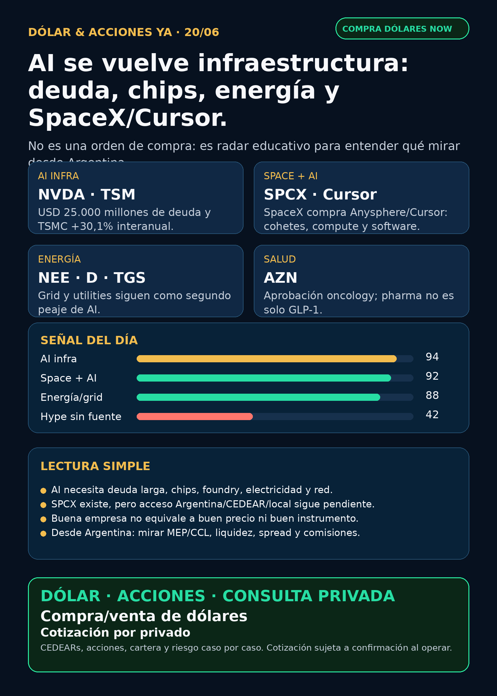

AI se vuelve infraestructura: deuda, chips, energía y SpaceX/Cursor.
Reporte educativo para Argentina: fuentes verificadas, capa dólar/CEDEARs y cero recomendación personalizada.

Dólar & Acciones YA — Radar completo — 20/06
Lectura simple del día
La lectura de hoy es clara: la AI ya no se mira solo por modelos o apps; se está armando como infraestructura crítica. NVIDIA cerró una emisión de USD 25.000 millones de notas senior; TSMC informó ingresos de mayo con +30,1% interanual; y SpaceX/SPCX firmó acuerdo para adquirir Anysphere/Cursor. En criollo: el mercado empieza a mezclar chips, deuda larga, electricidad, satélites, software y talento de AI en una misma cadena.
Para Argentina, la conclusión no es “comprar tal ticker”. La conclusión correcta es separar cuatro cosas: buena empresa, precio razonable, instrumento disponible y tamaño prudente en cartera. Si el activo está afuera, hay que revisar vía US directa, CEDEAR si existe, liquidez, spread, comisiones, CCL/MEP y riesgo fiscal/compliance.
Dólar Argentina — snapshot operativo
- BlueLytics: oficial compra $1.432,00 / venta $1.482,00; blue compra $1.448,00 / venta $1.480,00; timestamp 2026-06-19T19:45:51.499965-03:00.
- CriptoYa: MEP AL30 24h $1.478,02 (2026-06-19T16:56:50-03:00); CCL AL30 24h $1.520,04 (2026-06-19T16:56:22-03:00); USDT ask $1.522,61 (2026-06-20T08:49:43-03:00).
- Uso práctico: son referencias públicas para contexto. Para operar se confirma broker/mesa en vivo, spread, comisiones, liquidez y CCL/MEP del momento.
Tesis central
AI se está convirtiendo en un paquete de infraestructura:
1. Capital: levantar deuda/capital largo sin romper el balance.
2. Chips/foundry/memoria: GPUs, HBM, DRAM, NAND, networking y foundry avanzada.
3. Energía y grid: generación, transmisión, almacenamiento, permisos y regulación.
4. Software/agentes: Cursor/Anysphere muestra que el software de agente también entra en el perímetro de infraestructura.
5. Instrumento correcto: desde Argentina importa tanto qué mirar como cómo acceder.
Radar educativo por calidad de señal — no es ranking de compra
1) NVIDIA / NVDA — AI infra financiada como infraestructura
- Qué pasó: NVIDIA completó el 18/06/2026 una emisión de notas senior por tramos que totaliza USD 25.000 millones. El FWP indica uso general corporativo, incluyendo repago/refinanciación de notas.
- Por qué importa: no es revenue nuevo, pero sí confirma acceso masivo a capital largo para una empresa central del data-center AI stack.
- Estado: señal fortalecida / en radar.
- Riesgo: valuación exigente, China, concentración de capex, competencia y expectativas ya descontadas.
- Fuente: https://www.sec.gov/Archives/edgar/data/1045810/000119312526275783/d48176d8k.htm
- Fuente FWP: https://www.sec.gov/Archives/edgar/data/1045810/000119312526271326/d49394dfwp.htm
2) TSMC / TSM — el cuello de botella físico sigue fuerte
- Qué pasó: TSMC reportó revenue de mayo 2026 por aprox. NT$416,98 mil millones, +1,5% mensual y +30,1% interanual; enero–mayo +30,0% interanual.
- Lectura en criollo: si NVIDIA vende las palas de la fiebre AI, TSMC fabrica buena parte de esas palas.
- Estado: fortalece tesis foundry/semis.
- Riesgo: geopolitics Taiwán, ciclo semis, capex, valuación e instrumento local.
- Fuente: https://www.sec.gov/Archives/edgar/data/1046179/000104617926000367/tsm-revenue20260610.htm
3) SpaceX / SPCX + Anysphere/Cursor — space se mezcla con software AI
- Qué pasó: SpaceX/SPCX informó en 8-K del 16/06/2026 un acuerdo de fusión para adquirir Anysphere, Inc. (“Cursor”). Cursor sobreviviría como subsidiaria wholly-owned. El 424B4 también menciona colaboración previa vinculada a GPU cluster compute, Grok y posible desarrollo conjunto.
- Por qué importa: mueve a SpaceX de cohetes/Starlink hacia un stack más amplio: launch, satélites, compute, modelos y apps de AI.
- Estado: fortalece tesis / radar alto.
- Argentina: acceso CEDEAR/local no verificado. Si Charly opera con cuenta US, todavía faltan precio vivo, liquidez, spread, tamaño, fiscal/compliance y riesgo de control.
- Fuente 8-K: https://www.sec.gov/Archives/edgar/data/1181412/000162828026043411/spaceexplorationtechnologi.htm
- Fuente 424B4: https://www.sec.gov/Archives/edgar/data/1181412/000162828026042639/spaceexplorationtechnologi.htm
4) Energía / grid — NextEra + Dominion y capa Argentina
- Qué pasó: NextEra ratificó estructura de merger con Dominion; Dominion informó emisión de USD 1.000 millones de junior subordinated notes Serie A y USD 500 millones Serie B, ambas due 2056.
- Lectura: data centers y AI necesitan electricidad y red. Las utilities con escala y acceso a financiamiento largo quedan en radar, pero con riesgo regulatorio/tasas.
- Argentina: TGS informó upgrade S&P de deuda long-term local/foreign currency de B- a B por revisión del transfer/convertibility risk de Argentina. Energéticas locales como YPF, Pampa, TGS, Central Puerto y transporte/gas/red quedan como radar educativo, no como compra automática.
- Estado: fortalece tesis sectorial energía/grid.
- Fuente NEE: https://www.sec.gov/Archives/edgar/data/753308/000075330826000046/nee-20260615.htm
- Fuente Dominion: https://www.sec.gov/Archives/edgar/data/715957/000119312526272001/d122810d8k.htm
- Fuente TGS: https://www.sec.gov/Archives/edgar/data/931427/000093142726000008/tgs.htm
5) AstraZeneca / AZN — pharma real fuera del hype GLP-1
- Qué pasó: AstraZeneca informó que Truqap + abiraterone/ADT fue aprobado en EE.UU. para cáncer de próstata metastásico hormonosensible PTEN-deficiente. La compañía cita CAPItello-281 y reducción de riesgo de radiographic disease progression/death de 19%.
- Por qué importa: salud no es solo GLP-1. Oncology con aprobación regulatoria y biomarcador concreto sigue siendo carril serio de research.
- Estado: fortalece tesis pharma/oncology.
- Riesgo: adopción clínica, pricing, competencia, cobertura y expiraciones/pipeline.
- Fuente: https://www.sec.gov/Archives/edgar/data/901832/000165495426005964/a1987i.htm
6) Robinhood / HOOD — señal mixta en fintech/trading platforms
- Qué pasó: HOOD anunció reducción de aproximadamente 10% de empleados full-time, desde una “posición de fortaleza”, y citó volúmenes promedio diarios récord MTD en equities, options y prediction markets. Estima cargos cash por severance/benefits de aprox. USD 20 millones y SBC de aprox. USD 8 millones.
- Lectura: disciplina de costos puede ser positiva, pero una reducción grande también trae riesgo operativo/cultural. Para Stock Radar importa por fintech, trading agents y mercados predictivos.
- Estado: vigilar / señal mixta.
- Fuente: https://www.sec.gov/Archives/edgar/data/1783879/000178387926000071/hood-20260616.htm
Watchlist base — seguimiento rápido
- RKLB: revisado; Form 4 reciente, sin señal fundamental primaria nueva fuerte. Sigue en radar space/launch/defensa.
- NVDA: señal fuerte por deuda senior de USD 25.000 millones. Mirar costo financiero, capex y China.
- PLTR: revisado; Form 4 recientes, sin señal operacional nueva fuerte. Narrativa AI vigente, valuación a vigilar.
- TSM: señal fuerte por revenue mayo +30,1% interanual.
- MU: previews de earnings 24/06 detectados, pero sin fuente primaria nueva. Vigilar HBM/memory; no vender preview como hecho.
- GOOGL/GOOG: hyperscaler/TPU/data centers en radar; sin señal operacional nueva fuerte en la ventana.
- AAPL: Apple Newsroom/Brasil y memoria quedaron como vigilancia, no tesis central de hoy.
- HOOD: señal mixta por reducción de fuerza laboral + volúmenes récord MTD.
- TSLA: autonomía/robotaxi revisado; sin señal primaria nueva más fuerte que infra/SPCX/energía.
- ASML: discovery sobre China/export controls quedó NO VERIFICADO sin primaria accesible.
- Gold/GLD/GOLD/B: sin instrumento exacto, no hablar de precio ni tesis.
- RVI/DXYZ: wrappers private-tech útiles para educación; no son compra directa de OpenAI/Anthropic/SpaceX.
- AVGO: supply chain AI relevante; filings recientes, sin titular nuevo más fuerte que NVDA/TSM/SPCX.
Capa Argentina / instrumentos
- CEDEAR no es lo mismo que acción US: puede tener liquidez, ratio, spread y CCL implícito distintos.
- MEP/CCL importan: un activo puede subir en dólares y perder atractivo local si el tipo de cambio implícito se mueve mal, o al revés.
- Energía local: YPF, Pampa, TGS y Central Puerto siguen en radar porque AI y data centers revalorizan energía, gas, transmisión y capacidad de inversión. Pero cada una requiere fuente fresca, precio, liquidez, riesgo regulatorio y tamaño.
- SPCX/DXYZ/RVI/CBRS: no asumir acceso limpio desde Argentina. Hay que verificar broker, especie, liquidez, spread, comisiones y tratamiento fiscal.
Pharma/salud
- AZN: señal limpia por Truqap/capivasertib.
- LLY/NVO: GLP-1 sigue en radar, pero no apareció catalizador clínico/regulatorio primario más fuerte esta noche. NVO tuvo 6-K de share repurchase por hasta DKK 15 mil millones dentro de programa anual; eso es capital return, no aprobación clínica nueva.
- PFE/AMGN/biotech: revisados; sin catalizador clínico primario fuerte para titular.
Defensa, aerospace y guerra física
Carril revisado explícitamente: AVAV, GE Aerospace/GE, RTX, LMT, NOC, GD, HWM, KTOS, BA, ITA/XAR. No apareció contrato, backlog o margen primario suficientemente fuerte para ganarle a AI infra/SPCX/energía. Estado: revisado sin señal fuerte nueva. Mantener radar por drones, counter-UAS, motores, aftermarket militar/comercial, municiones y defensa aérea.
Autonomous mobility / physical AI
Revisado: Tesla, Waymo/Alphabet, Uber, Zoox/Amazon y Joby. Sin señal primaria nueva más fuerte que chips/energía/SPCX en esta ventana. Estado: seguimiento.
Crypto gobernado
Revisado sin input nuevo fuerte. Mantener carril separado: BTC/ETH/SOL, ETFs/proxies públicos, stablecoin/payment rails y métricas verificables. Tokens virales nuevos siguen en modo auditoría dura, no oportunidad.
Red flags / hype para ignorar hoy
- “ASML/China” como titular fuerte sin fuente primaria accesible: queda NO VERIFICADO.
- Previews de Micron earnings: sirven para agenda, no como resultado.
- “Wrapper privado = comprar OpenAI/SpaceX/Anthropic directo”: falso. DXYZ/RVI tienen NAV, premium/descuento, liquidez y activos restricted.
- “SPCX existe, entonces es simple para Argentina”: falso hasta verificar acceso, liquidez, spread, impuestos y tamaño.
- “Reducción de personal siempre bullish”: falso; en HOOD es señal mixta.
Qué mirar después
1. Micron earnings del 24/06: HBM, DRAM, NAND, datacenter y guidance.
2. SPCX: cierre/integración Cursor, liquidez, lockups, precio vivo y acceso Argentina/US.
3. NextEra/Dominion: aprobaciones regulatorias, deuda, tasas y relación con data-center power.
4. TGS/YPF/PAM/CEPU: filings con datos operativos reales, no solo narrativa energía.
5. AZN/LLY/NVO: FDA/EMA, trials y aprobación/reembolso, no titulares secundarios.
Recibo visible de cobertura
Revisado: watchlist base; AI infra/semis; energéticas globales y argentinas; pharma/GLP-1/oncology; defensa/aeroespacial; space/SPCX/RKLB/private wrappers; fintech/trading agents; autonomous mobility/physical AI; crypto gobernado. Si un carril no aparece como titular, fue porque no tuvo señal primaria más fuerte en esta ventana.
Servicio privado
Dólar · CEDEARs · Acciones · Cartera · Riesgo. Compra/venta de dólares y consulta privada caso por caso. Cotización sujeta a confirmación al momento de operar.
Disclaimer
Esto no es asesoramiento financiero personalizado ni orden de compra/venta. Es research educativo para decisión humana: antes de invertir hay que revisar precio de entrada, horizonte, monto, liquidez, costos, impuestos, instrumento disponible y tolerancia al riesgo.
Página web principal · Canal de WhatsApp